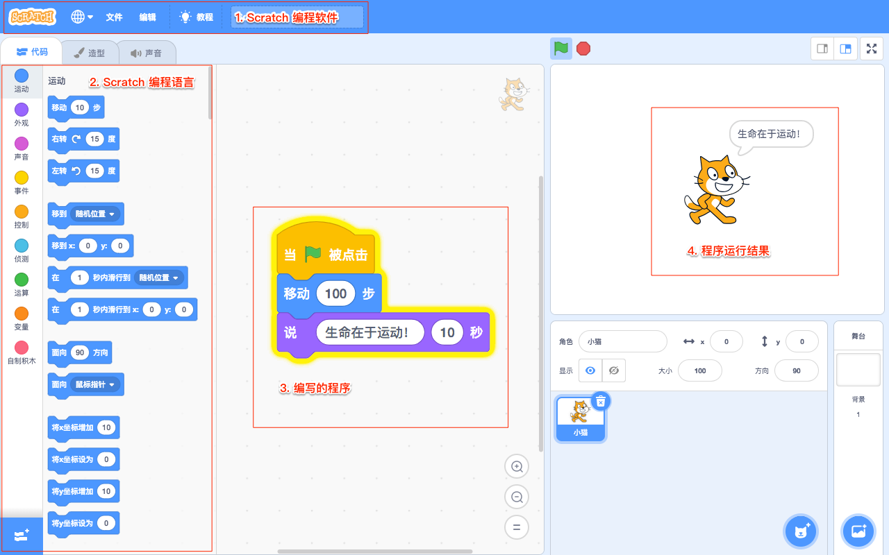

编程
（Programming）
schedule45-90 分钟
stars初级（Beginner）
face3-6 年级
一. 什么是编程？（What is programming?）

- 【编程】在虚拟世界中，自由表达想法。
- 【比如】我要在虚拟世界中创造一只猫，猫会唱歌、会飞、会说话等。
- 【淘宝】在虚拟世界中，构造了一个超级商场，里面的商品应有尽有。
- 【腾讯】在虚拟世界中，构造了一个社交帝国，让人们联系的更紧密。
- 【百度】在虚拟世界中，构造了一个超级老师，有问题就可以问百度。
- 【抖音】在虚拟世界中，构造了一个娱乐场所，刷视频就上抖音。
二. 为什么要编程？（Why program?）

- 【提升孩子的创造力】在虚拟世界中，孩子可以天马行空地表达任何创意。
- 【提升孩子的逻辑思维能力】增强孩子做事的条理性；增强孩子的推理与判断、比较与分析、抽象与概括、归纳与演绎的能力；
- 【提升孩子的解决问题的能力】
- 【培养孩子学习兴趣】基于项目的“做中学”教学方法，使孩子学习更有热情。
- 【人工智能时代的需求】在未来充满机器人、AI 的世界里，掌握编程技能让孩子更从容。
- 【增加升学竞争力】参加编程比赛，助力升学。
二. 什么是 STEM？（What is STEM?）
- 【STEM】利用工程学（Engineering）方法，应用数学（Mathmatics）和科学（Science）知识，创造技术（Technology）和解决方案（Solution），来解决现实世界中的问题。
- 【历史】20 世纪 90 年代，由美国国家科学基金会提出，旨在提高科技发展的竞争力。美国政府从利益、安全出发，藉由 STEM 教育培育人才，促进经济以及科技的发展，维持全球领先，同时提高人民的科学素养。
- 【VEX IQ 平台】通过机器人课程，让学生动手探索 STEM，培养学生的科学思维、工程思维、创造力等。
三. 如何编程？（How to program?）

- 【如何编程】使用编程软件、编程语言，来编写程序。
- 【编程软件】用来输入程序的软件工具，如 Scratch 编程软件。-->
- 【编程语言】用来向计算机发出指令。分为人类理解的语言和计算机理解的语言。
四. 栗子

- 【表达】创建一只小猫，每天走路 100 步，提示主人生命在于运动！
五. 机器人的应用

- 【工业生产机器人】用来制造汽车、电脑等。
- 【生活服务机器人】用来扫地、拖地、修剪草坪等。
- 【警察机器人】协助警察执行危险任务，如拆炸弹、调查危险环境等。
- 【深海机器人】在海底执行任务，发现深海新物种等。
六. 课堂练习（Matching Exercise）
1. 将术语填写到横线上。
自主机器人
化学工程
土木工程
电子工程
工程学
混合机器人
机械工程
机器人
机器人学
专业工程
STEM
遥控机器人
- 将科学、技术、工程和数学教育形成一个引人入胜的研究领域。
- 应用科学、数学、技术等知识，创造产品、解决方案等，来解决问题。
- 利用物理和生物科学，将原材料或化学物质转化为更有用的形式，以解决问题。
- 对物理和自然环境进行设计、建造和维护，来解决问题。
- 利用电、电子和电磁来解决问题。
- 设计、创造机器和机械系统，来解决问题。
- 由两种或多种类型的工程组合而成的一种全新工程。
- 是专业工程，专门处理机器人的设计、构造、操作和应用。
- 是一个人造机器，能够代替人类完成特定任务。
- 遥控操作的机器人被称为 。
- 自主操作的机器人被称为 。
- 具有遥控和自主功能的机器人被称为 。
七. 创意练习（Idea Book Exercise）

- 想象一个可以为你解决某个问题的机器人，把它画出来，并给它取个名字。
- 你的机器人能做什么？能解决什么问题？它是如何工作的？它是通过什么控制的？把问题的答案写下来吧！